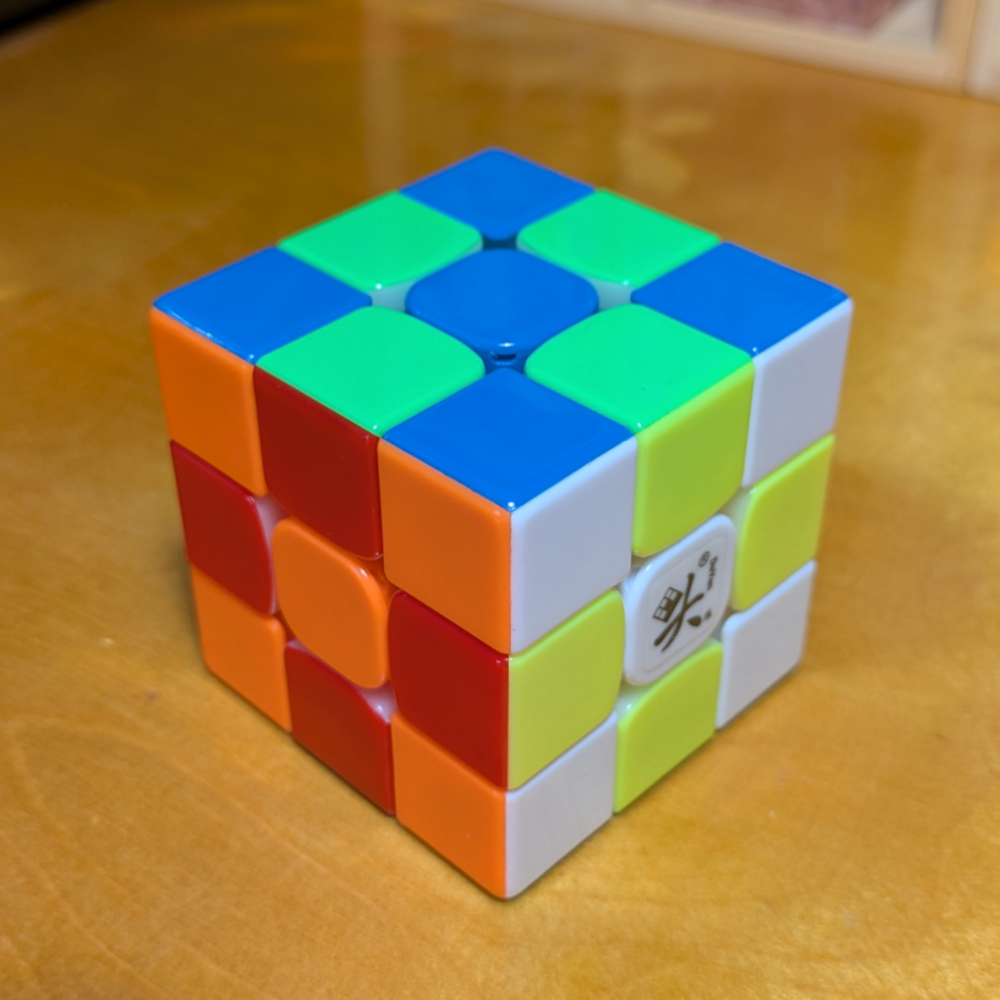
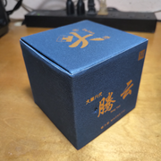
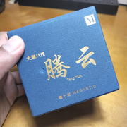
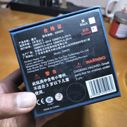
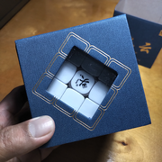
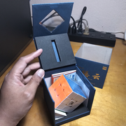
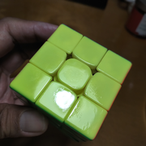
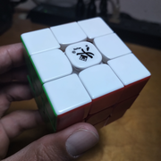
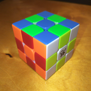
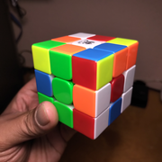

DaYan TengYun M
{kind=link}

500059 (2019)
DaYan Tengyun M. The very first "speedcube" I ever bought was the DaYan Zhanchi (original), back when I was in college and I remembered that I used to know how to solve the cube. Apparently (I didn't know this at the time) every cuber had a Zhanchi or a Guhong; these were revolutionary cubes. Then, a half decade later, the company decided to innovate afresh, after some (less successful) releases, with the Tengyun.
The most prominent feature of the Tengyun is its softness and quietness. It really is like handling a cloud, as the name suggests. The colors are glossy and bright, very toy-like, but still good for recognition. The magnets are not particularly harsh, and their position more towards the middle of the pieces rather than the end reinforces the gentleness of the turning. And all this gentleness was felt in a relatively tight cube.
It comes with extra sets of springs, but I haven't experimented with replacing them. I'm really a cubing zoomer in this regard; I've been spoiled by modern spring compression systems!
The feeling of this cube is very far away from the feeling I always thought I like in cubes (snappy, clunky, heavy, with strong magnets) but I found (and still find) it irresistible. It's gentle and not assertive. This is the cube for when you want to relax.
Apparently, the newer versions of this cube (we're up to version 3 now) move further away from the quietness of the original. That probably explains why this cube is still being sold. I can probably pick out this cube from the others in my collection blindfolded, just from the feel. I'm glad I was able to get one.
Original post: https://www.instagram.com/p/CwamVJqxeRf
Specifications
| Make | DaYan |
|---|---|
| Model | TengYun M |
| Edition/Variant | |
| Model no. | 500059 |
| Release year | 2019 |
| Magnets (edge-corner) | 🧲 |
|---|---|
| Magnets (core) | ❌ |
| Magnets (maglev) | ❌ |
| Stickerless | ⭕ |
| Internals | Primary |
|---|---|
| Externals | Glossy plastic caps |
| Adjustment | Philips screw - axis distance; alternative springs |
| Remarks | Consistently named the "quietest cube" |
Photos
{kind=link}

Cube box
{kind=link}

Box top
{kind=link}

Box bottom (with model number)
{kind=link}

Box window with cube view
{kind=link}

Open box
{kind=link}

Yellow face with factory lube
{kind=link}

White face with logo
{kind=link}

Cube (checkerboard state)
{kind=link}

Cube (scrambled state)
Collections
This cube is part of the following collections: